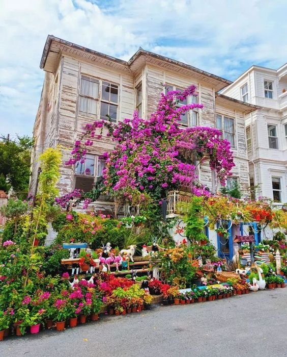
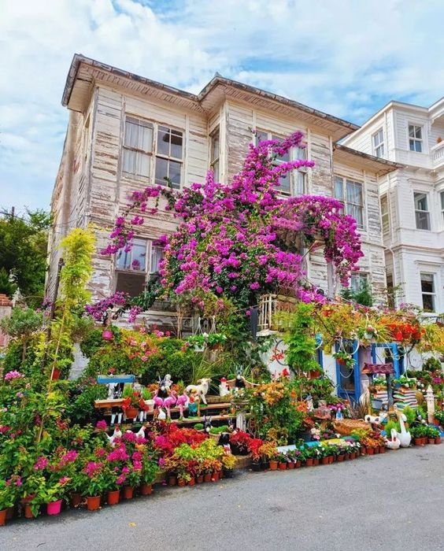
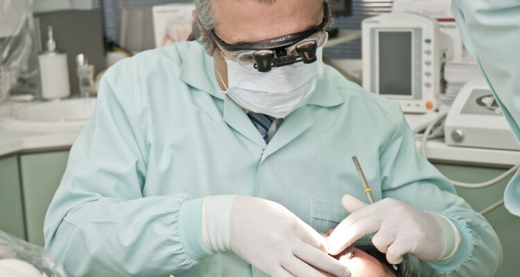

En
En  Tr
Tr اسطنبول
اسطنبول هي واحدة من أكبر المدن التركية تقع على مضيق البوسفور الذي يفصل بين أوروبا وآسيا. إنها مدينة تاريخية ذات تراث ثقافي غني ، وقد كانت عاصمة الإمبراطوريتين البيزنطية والعثمانية. تشتهر بهندستها المعمارية الجميلة ، بما في ذلك مسجد آيا صوفيا والمسجد الأزرق ، وأسواقها الصاخبة مثل البازار الكبير. و أن اسطنبول هي وجهة سياحية أيضا وتعتبر البوابة بين أوروبا وآسيا.
قصر توبكابي

قصر توبكابي هو قصر تاريخي يقع في منطقة السلطان أحمد ،
وكان المقر الرئيسي للسلاطين العثمانيين قرابة 400 عام. تم بناء القصر في القرن الخامس عشر ويضم مجموعة من المباني ، بما في ذلك العديد من الساحات ، والحريم (المقر الخاص للسلطان وعائلته) ، ومتاحف مختلفة. يشتهر القصر بأعمال القرميد المعقدة والديكور المزخرف وإطلالات رائعة على مضيق البوسفور والقرن الذهبي. كما يضم العديد من القطع الأثرية الدينية والتاريخية الهامة ، بما في ذلك خنجر توبكابي ، والألماسة الملعقة كما تسمى والعباءة المقدسة ، والتي يعتقد أنها تخص النبي محمد (ص). فاليوم ، القصر مفتوح للجمهور كمتحف ووجهة سياحية شهيرة ، بالإضافة إلى أنه أحد مواقع التراث العالمي لليونسكو.
صهريج البازيليك

صهريج البازيليك ، المعروف أيضًا باسم Yerebatan sarnici (Sunken Palace) هو صهريج جوفي يقع في منطقة السلطان أحمد. تم بناؤه في القرن السادس خلال فترة الإمبراطورية البيزنطية لتوفير إمدادات المياه للقصر والمدينة القريبين. الخزان عبارة عن غرفة تحت الأرض تبلغ مساحتها حوالي 140 × 70 مترًا ويدعمها 336 عمودًا رخاميًا. إنه مملوء بالماء ومزين بالعديد من الميزات المثيرة للاهتمام ، بما في ذلك منحوتات رأس ميدوسا المستخدمة كقواعد أعمدة ورؤوس ميدوسا المقلوبة رأسًا على عقب. الصهريج مفتوح للجمهور وهو وجهة سياحية شهيرة ومكان لا بد منه في اسطنبول. يتم استخدامه أيضًا كموقع للعديد من الأفلام ومقاطع الفيديو الموسيقية وحتى بعض التقاط الصور..
جامع السلطان أحمد ( المسجد الأزرق)

المسجد الأزرق ، المعروف أيضًا باسم مسجد السلطان أحمد ، هو مسجد تاريخي يقع في اسطنبول ، تركيا. تم بناؤه في أوائل القرن السابع عشر في عهد السلطان أحمد الأول ويعتبر من أكثر المعالم شهرة في المدينة. يشتهر المسجد بمآذنه الستة وأعمال القرميد الزرقاء التي اكتسب اسمه منها. تم تزيين الجزء الداخلي من المسجد أيضًا بالبلاط والخط المعقد ، بالإضافة إلى العديد من الثريات الكبيرة. لا يزال المسجد مكانًا نشطًا للعبادة ، ولكنه أيضًا مفتوح للجمهور كمنطقة جذب سياحي. يجب على الزوار خلع أحذيتهم وتغطية رؤوسهم قبل الدخول. كما لا يُسمح للزوار بالدخول أثناء أوقات الصلاة. المسجد الأزرق هو أيضًا أحد مواقع التراث العالمي لليونسكو.
فنر و بلاط

يعتبر الحي اليوناني فنر والحي اليهودي بلاط منطقتين تاريخيتين فريدتين من المناطق السياحية الأكثر شعبية في اسطنبول. التاريخ الموجود هنا يستحق المشاهدة بالتأكيد.وهي من أحدالمناطق التي يفضل العديد من السياح المحليين والأجانب زيارتها ورؤيتها ، وهي رائعة للغاية بمحلات التحف والمقاهي والمطاعم السياحية.
برج غالاتا

برج غالاتا هو برج حجري من القرون الوسطى يقع في اسطنبول. تم بناؤه في القرن الرابع عشر من قبل مستعمرة جنوة في المدينة كجزء من تحصينات منطقة غالاتا. يبلغ ارتفاع البرج حوالي 66 مترًا ويوفر إطلالة بانورامية على المدينة من سطح المراقبة الخاص به. كما يشتهر البرج بهندسته المعمارية وتصميمه ، فهو ذو شكل أسطواني مكون من 9 طوابق ، ولكل منها استخدامات مختلفة ، والطابق الأرضي عبارة عن مطعم ، والطوابق العلوية تستخدم لسطح المراقبة إضافة إلى لمقهى. لعب البرج دورًا مهمًا في تاريخ المدينة واستخدم لأغراض مختلفة ، بما في ذلك سجن وبرج حريق وبرج مراقبة. يعد برج غلطة اليوم من المعالم السياحية الرئيسية ومكانًا شهيرًا للاستمتاع بمناظر اسطنبول.
المضيق

مضيق البوسفور هو مضيق يمر عبر اسطنبول ويفصل بين أوروبا وآسيا. يربط البحر الأسود ببحر مرمرة والبحر الأبيض المتوسط. إنه ممر مائي مهم للشحن الدولي وهو أيضًا وجهة سياحية شهيرة معروفة بمناظرها الخلابة ومعالمها التاريخية وأهميتها الثقافية. يمكن للزوار القيام بجولات بالقارب لمشاهدة المعالم السياحية والاستمتاع بالمناظر الطبيعية. ويوجد على المضيق ثلاثة جسور و نفق تحت البحر لربط مدينة اسطنبول بضفتيها الأوربية و الآسيوية . إنها أيضًا مكان رئيسي للسباحة وصيد الأسماك والرياضات المائية.
قصر دولمة باهتشيه

قصر دولمة باهتشيه تم بناؤه في القرن التاسع عشر خلال فترة الإمبراطورية العثمانية وكان بمثابة المقر الرئيسي للسلاطين من 1856 إلى 1922. يتميز القصر بمزيج من الطرز المعمارية العثمانية والأوروبية ، مع مدخل كبير وزخرفة مزخرفة وثريات رائعة . تشتهر ببذخها وعظمتها بإجمالي 285 غرفة و 43 صالة و 6 حمامات تركية. كما تضم أكبر ثريا كريستال معلقة في العالم وأكبر مجموعة من أثاث العصر العثماني في العالم. القصر مفتوح للجمهور كمتحف ووجهة سياحية شهيرة ، مما يعطي نظرة ثاقبة على نمط الحياة الفاخر للسلاطين العثمانيين.
شارع الاستقلال

شارع الاستقلال هو شارع مشهور . يشتهر بأجوائه الحيوية وأهميته التاريخية وتنوع المحلات التجارية والمقاهي والمطاعم والبارات. كما يتميز بالمباني التاريخية ، مثل مدرسة غلطة سراي الثانوية والقصر الفرنسي وكنيسة القديس أنتوني بادوفا. كما أنه موطن لخط الترام التاريخي الذي يمتد على طول الشارع. إنه مكان رائع لاستكشاف ثقافة المدينة وتاريخها والتسوق والاستمتاع بها. إنه أيضًا على موقع قائمة لليونسكو المؤقتة.
كنيسة القديس أنتوني بادوفا

كنيسة القديس أنتوني بادوفا هي كنيسة رومانية كاثوليكية تقع في منطقة تقسيم بشارع الاستقلال والتي بنيت في أوائل القرن السابع عشر. وهي من أقدم الكنائس في المدينة وهي بمثابة مكان عبادة للمجتمع الكاثوليكي ، ومفتوحة للزوار للاستمتاع بعمارتها والتعرف على تاريخها.
منارة برج الفتاة

منارة برج الفتاة ، المعروف أيضًا باسم برج ليندر ، هو برج يقع على جزيرة صغيرة في مضيق البوسفور في اسطنبول. إنه موقع تاريخي وثقافي ، وله أسطورة غنية وتاريخ. إنها وجهة سياحية شهيرة وتوفر مناظر رائعة للمدينة. يمكن للزوار الوصول إلى البرج عن طريق القوارب ، وهو مفتوح للجمهور كمقهى ومطعم.
برد شامليجا

برج شامليجا هو برج إذاعة يقع على قمة تلة شامليجا (تلة العرايس)، أعلى نقطة في اسطنبول. يوفر البرج إطلالات بانورامية على المدينة ومضيق البوسفور ، وهو مفتوح للجمهور ويمكن للزوار ركوب المصعد إلى الأعلى للاستمتاع بالمنظر.
البازار الكبير

يعد البازار الكبير ، المعروف أيضًا باسم Grand Bazaar ، أحد أكبر وأقدم الأسواق المغطاة في العالم. يقع في اسطنبول ويضم 61 شارعًا مغطى وأكثر من 4000 متجرًا. يشتهر البازار بالمجوهرات و الذهب والسيراميك والسجاد والمنسوجات والهدايا التذكارية. إنها وجهة سياحية شهيرة ووجهة تسوق رئيسية لكل من السكان المحليين وزوار اسطنبول. يعود تاريخه إلى القرن الخامس عشر وكان مركزًا تجاريًا مهمًا لعدة قرون. وهو أيضًا أحد مواقع التراث العالمي لليونسكو.
جزر الأميرات


جزر الأميرات هي مجموعة من تسع جزر تقع في بحر مرمرة أمام اسطنبول. إنها وجهة سياحية شهيرة معروفة بجمالها الطبيعي وأجوائها الهادئة وأهميتها التاريخية. الجزر خالية من السيارات ولا يمكن الوصول إليها إلا بالعبّارة. تشتهر بركوب الدراجات والمشي لمسافات طويلة والسباحة والنزهة. تعد الجزر أيضًا موطنًا للعديد من المواقع التاريخية ، بما في ذلك الأديرة والقصور والكنائس. الجزيرة الأكثر شهرة من بينها هي بويوكادا (الجزيرة الكبيرة) ، وهي أكبر جزيرة ولديها الكثير من المنازل والقصور التاريخية وكلية فانار اليونانية الأرثوذكسية التي تعود إلى القرن التاسع عشر. تعد الجزر أيضًا مكانًا شهيرًا للسكان المحليين والسياح على حد سواء للهروب من صخب المدينة والاستمتاع بوتيرة حياة أكثر رخاءً.
( بازار التوابل )السوق المصري

السوق المصري ، المعروف أيضًا باسم بازار التوابل ، هو سوق تاريخي يقع في اسطنبول. تشتهر بمجموعة متنوعة من التوابل والأعشاب والشاي والمواد الغذائية الأخرى. يعود تاريخ البازار إلى القرن السابع عشر وهو مقصد سياحي شهير ووجهة تسوق رئيسية للسكان المحليين. يتميز بمزيج من المحلات التجارية التقليدية والحديثة ، وهو أيضًا مكان رائع لاستكشاف تاريخ وثقافة اسطنبول.
قصر بيلربيه

قصر بيلربيه هو قصر تاريخي يقع في اسطنبول ، تم بناؤه في القرن التاسع عشر وكان بمثابة سكن صيفي للسلاطين العثمانيين وضيوفهم ومن أهم الضيوف الذين سكنوا فيه فترة طويلة هو فضل باشا أمير ظفار . يشتهر القصر بهندسته المعمارية الأنيقة والديكور المزخرف والحدائق الجميلة وأهميته التاريخية. اليوم مفتوح للجمهور كمتحف.
قصر يلدز

قصر يلدز هو قصر تاريخي يقع في اسطنبول. تم بناؤه في القرن التاسع عشر وكان بمثابة سكن للسلاطين العثمانيين . يضم مجمع القصر العديد من المباني والأجنحة وحديقة واسعة. يشتهر بهندسته المعمارية الجميلة وأهميته التاريخية. اليوم مفتوح للجمهور كمتحف.
أورتاكوي

أورتاكوي هو حي يقع في الجانب الأوروبي من اسطنبول. يقع على مضيق البوسفور ويشتهر بواجهته البحرية الخلابة والمسجد التاريخي. كما يضم الحي مجموعة متنوعة من المحلات التجارية والمطاعم والمقاهي ، مما يجعله مقصدًا سياحيًا شهيرًا.
-  أسعار علاج الأسنان في تركيا 2021-04-14
-
 علاج الأسنان في تركيا
2022-09-14
علاج الأسنان في تركيا
2022-09-14
-
 ما هو طب المسالك البولية؟
2018-03-18
ما هو طب المسالك البولية؟
2018-03-18
 Hair Transplant
Hair Transplant
“Dr Hasan, has been fantastic in their service for my FUE procedure with roughly 2500 grafts. Dr Hasan wrote in-depth and comprehensive emails detailing the procedure and reassuring me of all my concerns. Even though I live in Spain, he would often reply very late his time with such detailed emails.”
 WhatSapp دردشة ...
WhatSapp دردشة ...